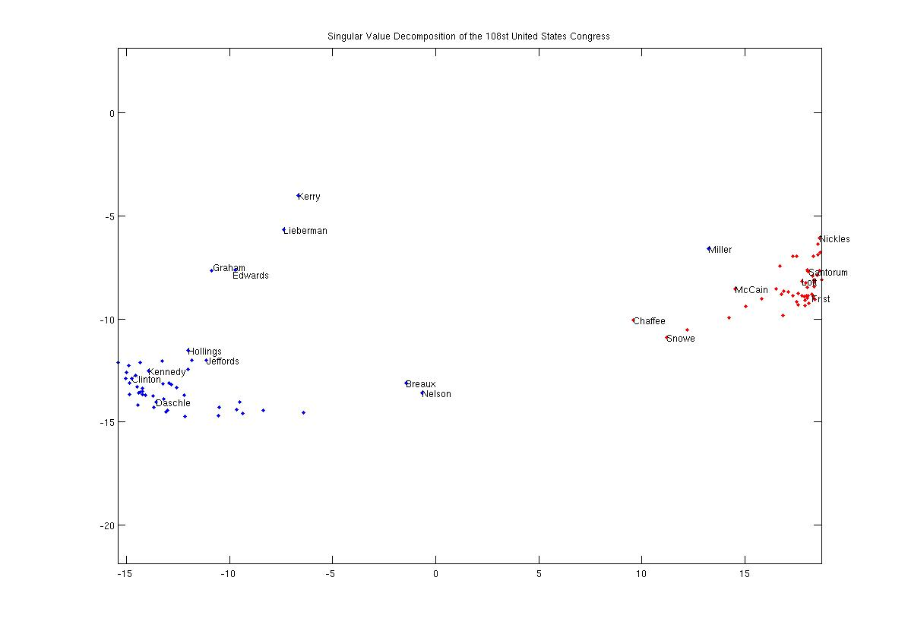
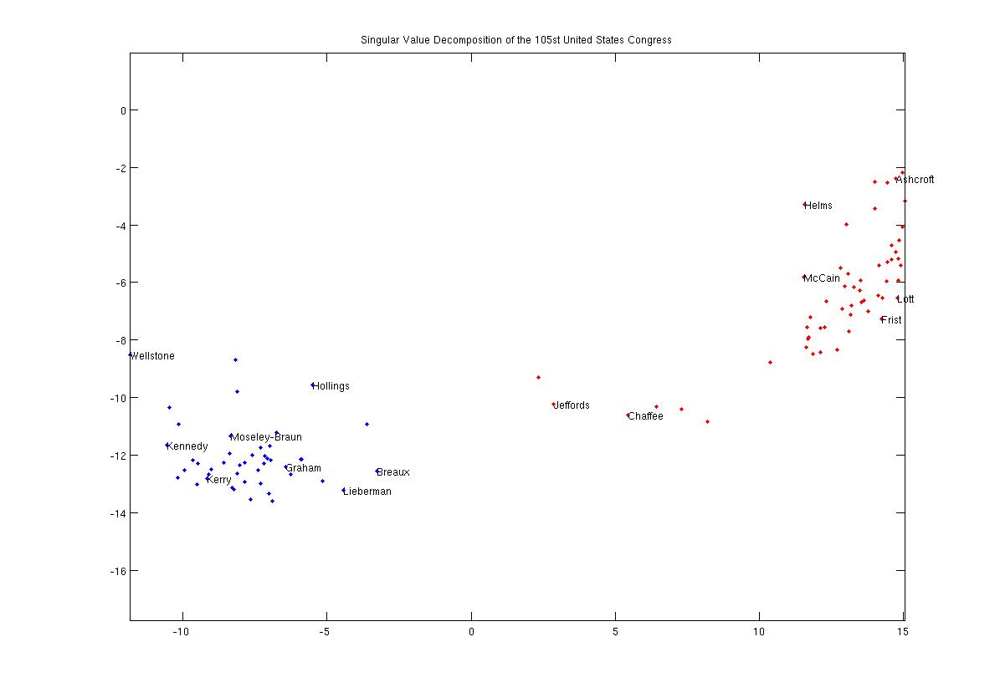
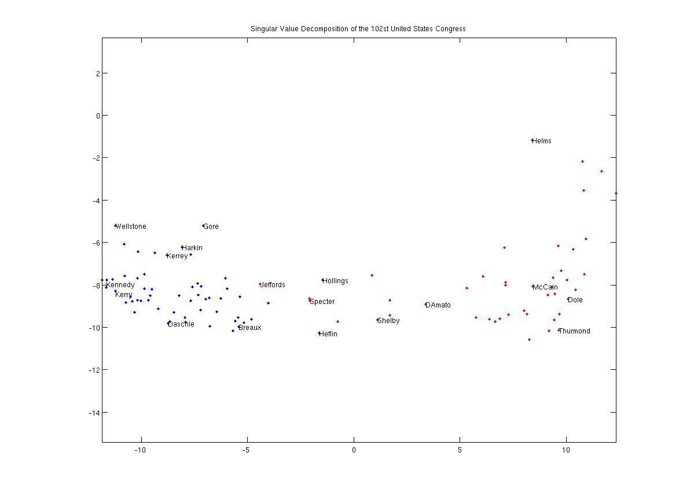
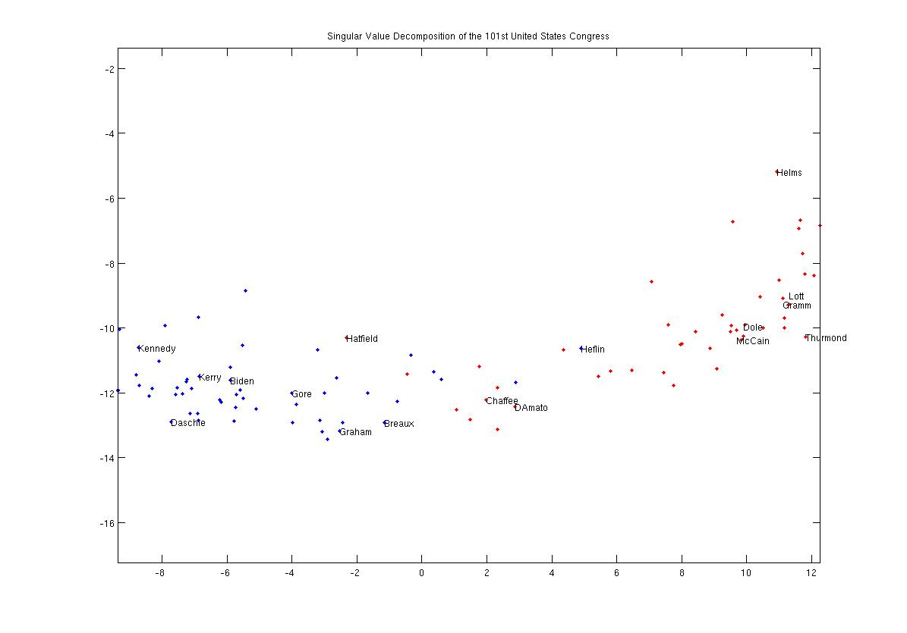

Abstract: This article analyzes the singular value decomposition (SVD) of United States senate roll call votes. The roll call votes of four sessions of the United States Senate are projected into two dimensions by their two largest SVD coordinates. Based on nothing but raw voting records, the SVD coordinates clearly reveal senators' party affiliations and accurately identifies moderate members of either party. Changes in the SVD mappings over a period of 13 years reveals a dramatic increase in partisanship. The SVD may also identify higher absenteeism or election year political shifts of senators engaged in presidential campaigns
In 2003, Lawrence Sirovich of the Mt. Sinai School of Medicine used the SVD to analyze the voting records of the United States supreme court in his paper A pattern analysis of the second Rehnquist U.S. Supreme Court. Through use of the singular value decomposition and information theoretic techniques, Sirovich concluded that the second Renquist supreme court's voting records could be produced by 4.68 ideal judges. The New York Times' science section ran a brief article covering his result.
In the spirit of Sirovich's result, we applied a singular value decomposition to the senate voting records of the first session of the 108th. During this session, the senate conducted 458 roll call votes. Each roll call vote was represented by a 100-entry vector. Each senator's "Yea", "Nay" or "Not present" vote was represented by 1, -1 or 0 respectively. The entire session's voting record could thus be represented by a 100 X 458 sized matrix, denoted V.
The matrix V is at most a 100-dimensional subspace of a 458-dimensional space. By applying the SVD to V, we can obtain an optimal coordinate system to represent each senator. That is, given a 100-dimensional "senator coordinate", we could exactly reconstruct all their 458 votes.
Since senators tend to vote according to party affiliation or ideology, most of the senator coordinates are insignificant. By only considering the two most significant senator coordinates, we can create a 2-dimensional ideological map of the senate. This map is depicted in Figure 1.

Figure 1: The SVD of the 108th United States
Senate, First Session
Democratic and Republican senators have been colored blue and red, respectively. The values of the axes and the axes themselves are artifacts of the singular value decomposition. In other words, the axes don't "mean" anything - they are simply the two most significant dimensions of the data's optimal representation.
Regardless, one can see that this map clearly clusters senators according to party. Note that this map was generated only from voting records, without any data on party affiliation. From just the voting data, there is clearly a partisan divide between the parties.
Interestingly, the senators who are closest to the gap, namely Breaux, Nelson, Chaffee and Snowe, are considered moderates among their parties. One notable exception is Democrat Zell Miller, who is placed much closer to the Republicans. Coincidentally, Miller is perhaps the most conservative Democrat in the senate and has pledged to support President Bush.
Another notable result is the clustering of senators Kerry, Lieberman, Edwards, and Graham. During this session, all of these senators were campaigning for the democratic nomination. This drift might be due to these senators having more "Not Present" votes than their colleagues or due to election year political shifts.
The second session of the 105th congress in 1998 also shows a strong partisan divide. Note that Kerry and Graham and Lieberman are no longer clustered:

Figure 2: The SVD of the 105nd United States
Senate, Second Session
We can also compare these maps against the 102nd senate from 1992. Note that this was in the midst of a presidential election year with a contested democratic primary:

Figure 3: The SVD of the 102nd United States
Senate, Second Session
Each party is still distinctly clustered, but there is a much more diverse spectrum than in 1998 or 2003. In 1992, Senators Gore, Harkin, and Kerrey all campaigned as either presidential or vice-presidential candidates. Their records show similar voting patterns. Again, it is unclear whether this is due to campaign-related absenteeism or from election year political shifts.
Finally, we can look at a similar map of the 101st senate from 1990:

Figure 4: The SVD of the 101st United States
Senate, First Session
As can be seen, this map contrasts starkly to the 108th congress. While there is still a dense cluster for each party, there is a much broader spectrum of voting records. For instance, in 1990 there were approximately 12 or 13 senators whose voting records fell between the moderates Chaffee and Breaux. By 2003 there were essentially none.
{kind=link}
{kind=link}
{kind=link}
{kind=link}